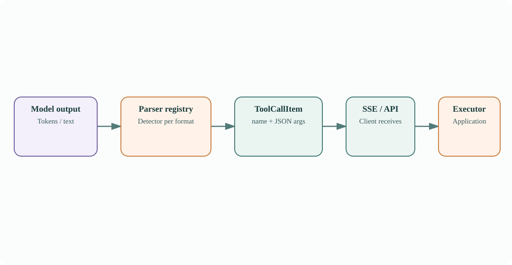
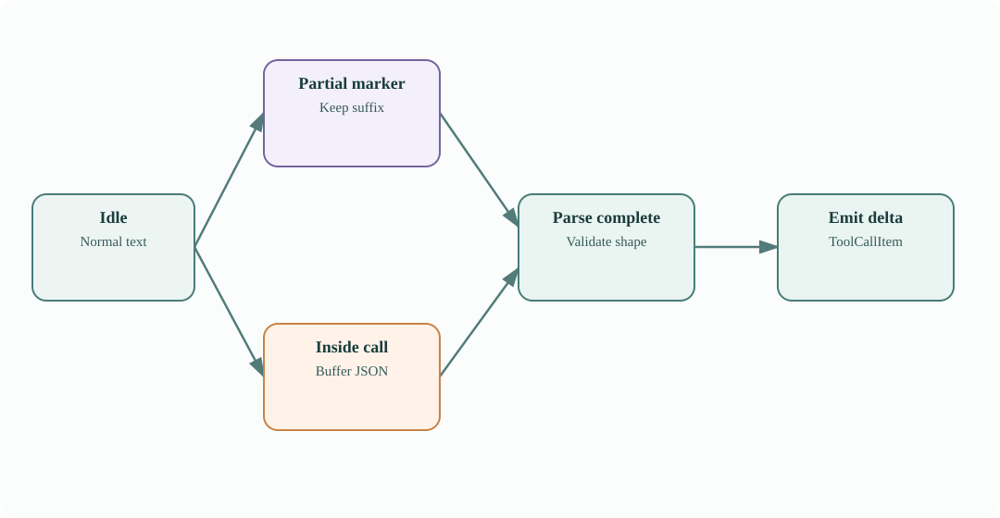

第 27 章 · SGLang 生产推理机制
Function Calling：Tool Parser 与 Streaming Protocol
拆解模型专属 tool-call token、parser registry、增量 JSON 解析、ToolCallItem 归一化与 OpenAI-compatible SSE 返回。
拆解模型专属 tool-call token、parser registry、增量 JSON 解析、ToolCallItem 归一化与 OpenAI-compatible SSE 返回。 本章区分研究论文的算法贡献、SGLang 当前源码实现、CPU-only 教学模型与硬件/部署限制。所有实现断言固定到 2026-11-23 的上游快照。
读完本章，你应该能
- 从请求入口追踪到对应的运行时状态、缓存或执行组件。
- 解释关键数据结构、数学关系、并发边界和失败模式。
- 使用可复现的 CPU-only toy 实验验证核心不变量，而不把教学代码误称为生产内核。
1. 模型输出的是协议，不是已经执行的函数
模型可能输出特殊 token、XML、JSON 数组、Pythonic 表达式或模型专属的工具调用块。Serving engine 的任务是识别这些格式并转成统一结构；它不会因为解析成功就自动拥有执行外部工具的权限。Toolformer 研究的是模型何时调用工具、调用哪个 API、传入什么参数以及如何利用工具结果；Gorilla 强调 API 文档检索与工具调用准确性。SGLang 的 Tool Parser 位于更靠近 serving 的一层：它解析已经生成的模型协议。

2. Parser Registry：按模型协议选择 Detector
FunctionCallParser.ToolCallParserEnum 将 parser name 映射到 detector class，例如 DeepSeek、Qwen、Llama、Mistral、GLM、GPT-OSS、Kimi、Granite 与 Pythonic 等格式。Server Args 暴露 parser choices；API 请求携带 tools、tool_choice、tokenizer 和 prefix 等信息后，FunctionCallParser 选择对应 detector。为什么不能只用一个 JSON parser？不同模型的边界 token、并行调用分隔符、参数编码和结束标记都不同；有的格式把多次调用放在数组里，有的每个调用独立成块，有的参数甚至不是 JSON。
3. Non-stream 与 Streaming 是两条解析路径
Non-streaming 拿到完整文本后一次性 parse；streaming 则每收到一小段 token text 就调用 parse_streaming_increment。前者实现简单，但用户要等模型完成才看到 tool call；后者可以逐步返回函数名和部分参数，缩短工具准备时间。Streaming 解析器必须维护 buffer、当前 tool index、是否已经发送 function name、参数 JSON 是否完整等状态。不能假设每个 SSE chunk 恰好落在特殊 token 或 JSON 字段边界上。

4. Partial marker 与不完整 JSON：为什么需要 Buffer
例如模型输出片段可能依次是<tool_、call>{"name":"search"、,"arguments":{"q":"sglang"}}、</tool_call>。第一段不能立刻作为普通文本发给用户，因为它可能只是起始标记的一部分；第二段也不能急着 json.loads，因为对象还未结束。BaseFormatDetector 会把新文本加入 buffer，检测 partial bot token，并在必要时保留尚未完成的 JSON。模型协议不符合通用模式时，具体 detector 必须覆写 streaming parser，而不是强行套用一个通用状态机。
源码：BaseFormatDetector.detect_and_parse · parse_streaming_increment。
5. 统一结果 ToolCallItem：保留 index、name 与参数
解析器将格式差异压缩成 ToolCallItem：tool_index 用于区分并行工具调用，name 是工具名称，parameters 是 JSON string；source_text 可用于追踪原始片段但默认不暴露。normal_text 则保留没有被 parser 消费的普通文本。这种归一化让 OpenAI-compatible Chat Completions / Responses 路径不必为每种模型格式重新定义 wire protocol。注意参数仍可能是部分 JSON；streaming 客户端必须按 tool_index 合并增量片段，不能把每个 chunk 当成完整参数对象。
6. 从 Detector 到 SSE：服务端怎样逐段返回
Serving Chat 的流式路径先处理 reasoning parser，再判断 tool-call parsing 是否 active，随后调用 _process_tool_call_stream 生成 SSE delta。finish 时还要 flush detector buffer，并补发尚未流出的 tool arguments。若 reasoning parser 仍处于 reasoning 阶段，tool call 的解析与展示顺序也要遵守相应状态。这说明“模型输出了 tool token”并不等于“客户端已经拿到完整 tool call”。Streaming response 需要处理 incomplete prefix、final flush、logprobs 附着位置和 finish_reason 等边界。
7. 工具循环：执行权在应用层
一个完整工具循环通常是：模型输出 tool call → server parser 归一化 → API 把 tool_calls 返回给 client → client 校验参数并执行工具 → client 以 role=tool 回传结果 → 模型继续生成最终回答。SGLang parser 不知道你的数据库、shell、HTTP API 或权限系统，也不应该替代它们。Toolformer 将“选择工具”和“生成参数”视为模型能力；Gorilla 指出 API 版本与文档变化会影响调用正确性。生产应用还必须检查用户授权、参数 schema、超时、重试、幂等性、审计和工具返回内容中的 prompt injection。
8. Strict Tool Choice 与结构化约束的关系
Tool choice 决定模型是否必须调用工具、可选哪些工具或指定一个工具；strict schema 约束函数参数结构；tool parser 识别模型最终采用的序列化格式。这三个层次可协同，但职责不同。某些 detector 可以与 Structural Tag / grammar constraint 结合，让模型在生成阶段就遵守工具调用结构；另一些 detector 依赖模型专属 token 协议，需要自定义解析逻辑。不要把“schema constrained”与“工具调用语义正确”画成等价关系。
9. 交互：选择机制配置
Mechanism selector
完整文本到达后一次解析：实现简单，适合非流式响应；但不能提前暴露工具名和部分参数。
增量解析：每个 chunk 更新 detector buffer，并可能发出 normal_text 或部分 ToolCallItem。必须处理 marker 被切开、JSON 未闭合和 stream end flush。
执行在应用层：收到 tool_calls 后，客户端执行授权、schema validation、timeout 和审计，再把 role=tool 结果回传模型。
交互只改变教学状态，不会启动真实 SGLang server 或调用 GPU kernel。
10. 源码阅读路线与参考资料
- Tool Parser 官方文档：parser 列表、OpenAI-compatible API 与 streaming 示例。
- function_call_parser.py：registry、detector 初始化、non-stream / stream wrapper。
- base_format_detector.py：增量 buffer、partial marker 与 JSON 解析。
- serving_chat.py：reasoning 与 tool call SSE path。
- Toolformer · NeurIPS 2023；Gorilla · NeurIPS 2024。
实现快照：sgl-project/sglang@563813c0d60282fa848382fec600b40d28ddec98。Tool Parser 是模型协议适配层，不是 Agent runtime 或 tool executor。
可执行教学实验：examples/tool_parser.py（Python 标准库；不是实际 GPU 实现）。